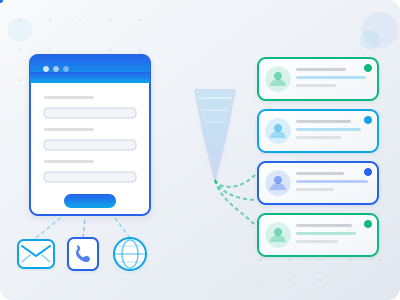
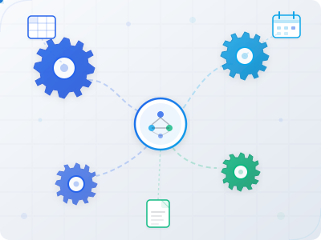
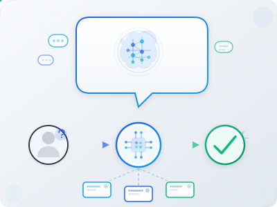
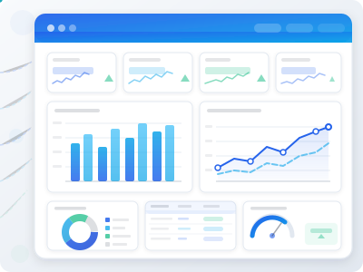

Workflow Automation Services
We build custom systems that replace manual work. Every project is scoped to your specific workflow. No one-size-fits-all packages.
We build custom systems that replace manual work. Every project is scoped to your specific workflow. No one-size-fits-all packages.
Capture leads from any source, route them to the right place, and trigger follow-up sequences automatically. No more leads slipping through or slow responses.
Faster response times, no missed leads, and a clear view of your pipeline.
Typical build: 1-2 weeks
Start with the Audit
Replace the copy/paste, manual entry, and tool-hopping that eats your day. We connect your systems and automate the handoffs.
Fewer errors, less admin time, and clean handoffs between steps.
Typical build: 2-3 weeks
Start with the Audit
Deploy AI-powered assistants that handle common questions, triage requests, and escalate to humans when needed. Reduce inbox overload.
Faster responses for customers, less repetitive work for your team.
Typical build: 2-4 weeks
Start with the Audit
Stop spending hours gathering data for reports. We automate the collection, compilation, and delivery so you have visibility without the work.
Always-current visibility into what matters, without manual data work.
Typical build: 1-2 weeks
Start with the Audit
We are selectively onboarding our first clients. Early adopters get direct access to the founder, priority support, and the lowest rates we will ever offer.
Start with a Free AuditMost builds fall into one of these ranges. Final pricing depends on scope, systems involved, and reliability requirements.
Start with the Free Automation Audit. You'll receive a workflow map, build plan, and a firm quote range.
No fragile hacks. We design for reliability: clean handoffs, monitoring, and documentation.
Every project includes documentation, training, and a clean handoff.
Clear documentation of how your system works, what triggers what, and how to troubleshoot common issues.
Walkthrough of your new system so you and your team know how to use it confidently.
Optional ongoing support to monitor your automations and fix issues before they become problems.
Automations break when tools change. Support keeps systems running and improving.
Common questions about working with Stromation.
Get a workflow map, prioritized opportunities, and a build plan. No cost, no strings attached.
Request Your Audit